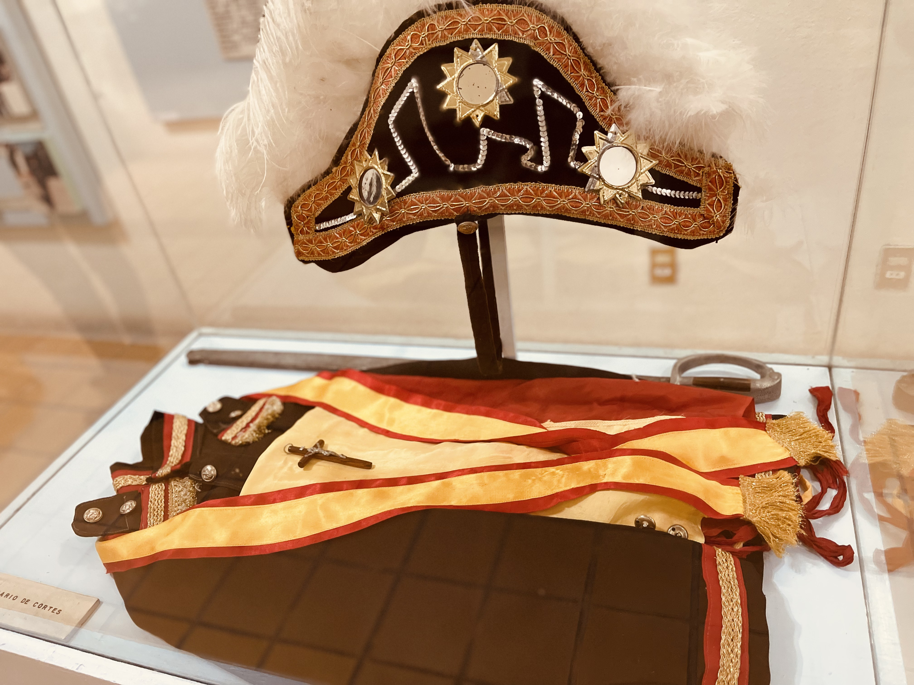

¡Descubre la historia ancestral de Santa Ana del Valle en el Museo Comunitario Shan Dany!
Te invitamos a sumergirte en las raíces históricas de nuestro querido pueblo. Desde tiempos remotos, Santa Ana del Valle ha sido testigo de la ocupación humana en el Valle de Oaxaca. Fue Ignacio Bernal, el reconocido arqueólogo, quien descubrió por primera vez el sitio prehispánico de Santa Ana del Valle entre 1955 y 1960.